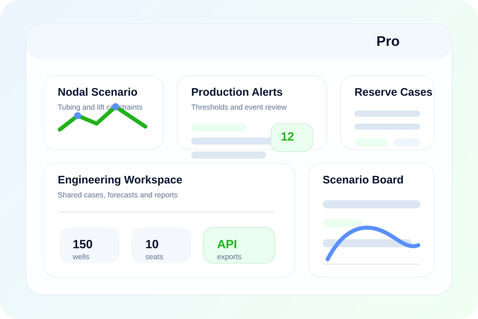

Nodal Scenario Engine
Compare tubing, choke and artificial lift cases with saved scenario history by well.
Most Popular Plan
The full engineering suite for active assets that need production surveillance, nodal scenarios, reserve workflows and deeper team collaboration in one web product.

What You Get
Compare tubing, choke and artificial lift cases with saved scenario history by well.
Keep reserve cases, material balance assumptions and export-ready technical reviews inside the product.
Push structured data to downstream systems and flag wells that cross production thresholds.
Give production and reservoir engineers a common operating environment with versioned cases.
Specifications
Pro is the best fit for field teams running active surveillance and optimization over multiple wells or pads.
This plan is where PetroSphere becomes a daily working tool for production and reservoir collaboration instead of a simple report layer.
Modules Included
Implementation
Map asset structure, teams, data files and the main engineering workflows that should be available on day one.
Import production, pressure and technical inputs, then validate the first dashboards and saved engineering cases.
Train engineers, activate recurring reporting and standardize how the team saves and reviews scenarios in the product.
Checkout Ready
These purchase actions already include stable plan codes. When you connect Stripe later, you can target these buttons directly instead of changing the page copy or layout.
Annual plan price: $9,078/year. One-time onboarding starts at $450 and can be billed during checkout or after purchase.